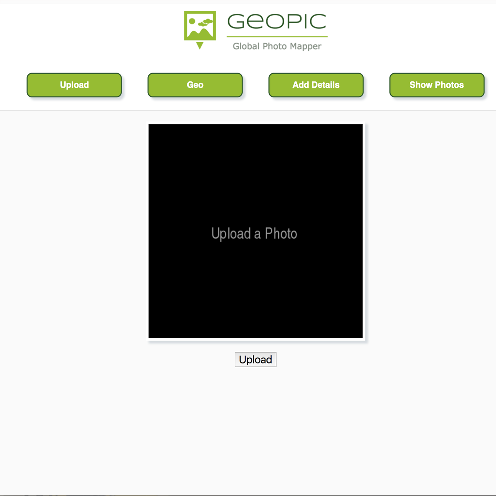
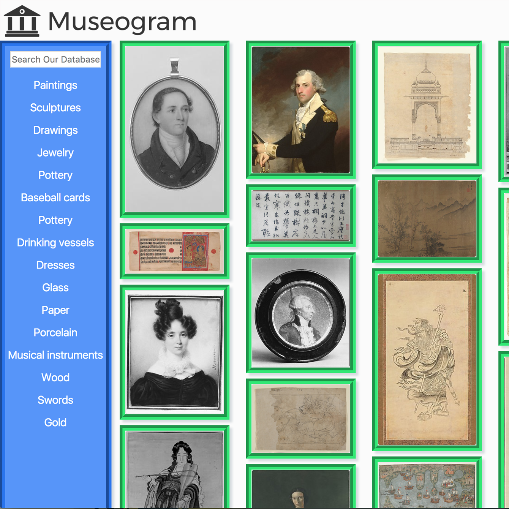
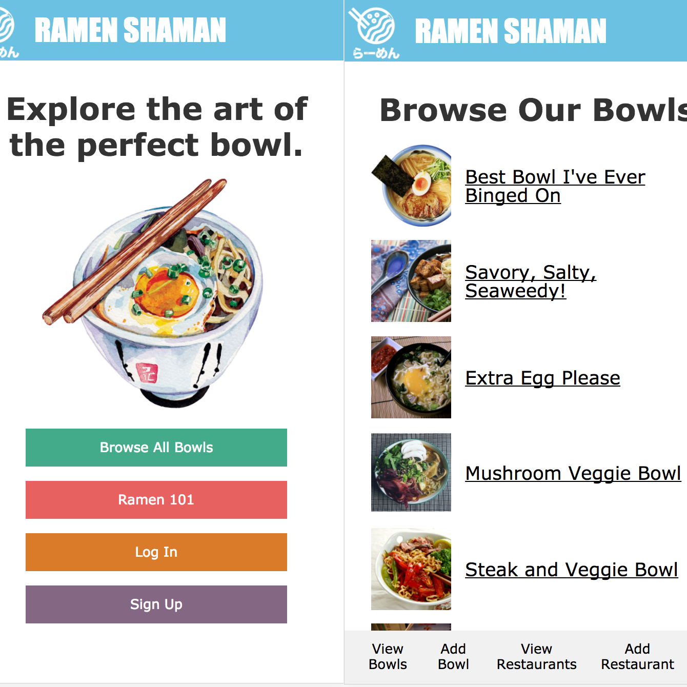
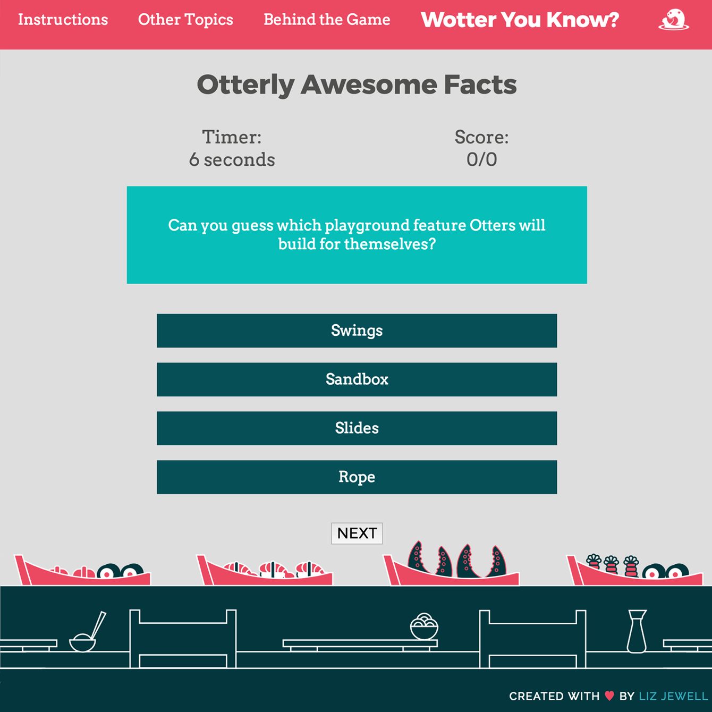

So stoked you want to see my work!
Explore some of my most recent projects below. Looking for something specific?
Contact me!

GEOPIC PHOTO MAPPER
- A global photo mapper that allows users to explore the world through photos. Upload and filter images, tag the place where the photo was taken, and see your photo plotted on a Google Map.
- Tech: MongoDB, Express, React with Redux, Node.js, Google Places API, Filestack API + Custom Uploader, Three.js
- Features: Upload, crop, rotate, and filter photos, geotagging with Google Places search, additional details form, redux fetch photos from backend API, plot by latitude and longitude on Google Maps

MUSEOGRAM
- This single page web app allows users to explore The Met's open collection of artworks. In less than a week, our team of 3 seeded a back-end API with thousands of artworks and built the complete front-end interface.
- Tech: AngularJS, Ruby on Rails, The Met API, PostgreSQL, JavaScript, Masonry Display, and Bootstrap CSS
- Features: Filter art by category, search thousands of artworks by keyword, "View More" button to prevent infinite scroll, loading screen, view/add reviews to art

RAMEN SHAMAN
- Use this app to track your favorite bowls of ramen, find new ramen shops in DC, and explore your favorite ingredients!
- Tech: Ruby on Rails, Yelp Fusion API, and PostgreSQL
- Features: Full CRUD functionality for 7 data models, user sign-up and authentication, custom profiles and favorites lists, mobile-first design

WOTTER YOU KNOW?
- Play this interactive trivia game to test your knowledge of otter facts!
- Tech: HTML, CSS, and JavaScript
- Features: Randomized selection of questions, timer-based scoring, and responsive design